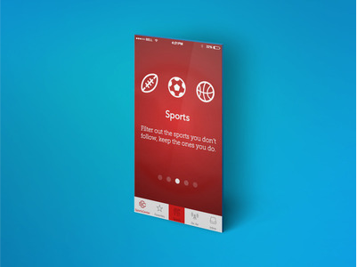
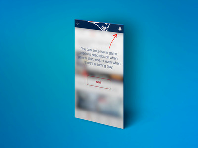

ESPN’s “SportsCenter” app, released in November 2013, was an update to a previous incarnation called “ScoreCenter,” the Worldwide Leader’s scores-only application. While reviews of ScoreCenter were generally well-received, ESPN wanted to provide users with a more branded experience, creating something that is “only doable by ESPN.” This meant moving beyond just scores, to news articles from the Associated Press (as well as team beat writers and internal sources), a constantly updated Twitter feed featuring ESPN personalities and heavy media inclusion, as much of the content in a user’s “news feed” features video analysis from various ESPN hosts and field reporters.
Fresh Tilled Soil had already harbored a personal relationship with Michael Rawlins, ESPN’s Principal User Experience Design Architect (he would speak on a panel at FTS’ annual gathering of UX experts, UX Fest), which spurred my interest to download the app and see if I could suggest any improvements.
Pivoting
However, the app's design was already slick. There was no glaring need to improve upon the app visually, which, prior to downloading, I had intended to do. So, on the recommendation of mentor Steve Hickey, I switched gears to providing an onboarding process, as user testing within the office uncovered some glaring issues in flow, and provided opportunities for improvement beyond the presentation layer.
One of the most intriguing aspects of user testing is the disparity with which different types of users are able to navigate an app or website. A user flow that may seem obvious to the app’s designer or power users can be viewed as a complicated maze by those less familiar with the given genre of app. “SportsCenter’s” user testing results flipped the script - those who followed sports with regularity tended to become frustrated quicker with the tasks asked of them.
In hindsight, this makes sense; sports fans are immediately privy to which sports, teams and news they want to see, and which they’d rather ignore. “SportsCenter” greets all users with a melting pot-style news feed of every major (and not so major) sport on its home screen, turning the discovery process into a game of “what buttons do I have to press to customize this thing.” This is in opposition to a blank slate approach that allows you to curate your own feed from the start (see: Bleacher Report’s TeamStream). Figuring out how to include a stronger level of curation while still maintaining the app’s core values of “SportsCenter on your phone” turned out to be a significant challenge.
Pain Points
By the end of testing, I was able to pinpoint which aspects of the app tended to leave users confused or stuck. In most cases, the wording wasn't descriptive enough or there were unnecessary extra barriers to entry.
Now
One of four features on the app's navigation bar, a few people thought it would be a filtered view of games already in progress. One user called it “useless,” as it interrupted his discovery process to finding his favorite teams. Turns out, it’s the Twitter feed.
Favorites
The app gives users the option to view news of specific teams, but, as we'll learn later on, the process of getting to that point (and returning once you’ve ventured elsewhere) isn’t intuitive.
Inbox
A option on the bottom tab bar, it's a generally confusing feature for new users. Its intended use is to house a stream of news specific to the teams you've chosen as your favorites. Not a single user initially recognized this as its purpose, and some ignored it entirely.
The Iteration Process
Having discovered specific pain points in discovery rather than design flaws, it became clear by the end of testing that some form of user onboarding was in order to prime users on how to use these features. Utilizing sites such as mobile-patterns.com and uxarchive.com for inspiration and the fantastic useronboard.com to discover best practices, I began fleshing out ideas for instructions, ultimately testing out two different styles: Breaking down main features prior to actual use, and a learn-by-doing process that provides pre-baked instructions as a user clicks on certain areas of the app.
Iteration One
A small red overlay with instructions pops up as you explore.
Iteration Two
Dotted lines pointing to each icon's function, unsure of how this would've been implemented.

Iteration Three
One of four slides explaning the app's primary features. Uses page control indicator dots to represent currently visible view.
Iteration Four
Overlay time! First, black with a peephole. However, there's a bit too much going on, and I became cramped for space when writing instructions.
Iteration Five
A more subdued black overlay with peephole design. Cleaner.

Iteration Six
A complete 180. White with background blur and dark blue text. Peepholes replaced with larger views of sections.
Determining how the experience would look was mostly a game of trial and error. I knew I wanted to play with overlays and somehow utilize playbook-style arrows to guide users to specific features. Naturally, pairing down and stripping back (along with just the right amount of Gaussian Blur) reaped what I felt to be the best results.
The Primary Flow
Using Sketch 3 to map out the flow, I added screens to replicate multiple user journeys within the app. By the end it turned into an unwieldy labyrinth, but with proper labeling and Sketch's pension for quick and easy manipulation, I was able to keep track of each screen and place them accordingly in prototyping tool InVision.
Design is only half the battle
The user - app relationship is one that must be built on trust. The user took the time (and perhaps money) to download your application, so it’s your job to not betray the user by performing actions without his or her permission.
Paramount examples are priming for location - there must be a reason to provide such information. The result of doing so should enhance the app experience in some way, or allow the user to take action. In this case, SportsCenter asks for location so the app can preload user favorites with teams in their area.
Signing up can also become an occasional barrier, especially if there's no option to experiment with the app first to see if it's worth the commitment. Currently, a user can only choose his or her favorite team/teams by signing up, which then lets the app pre-populate a list of teams based on location. However, it'd be more effective to let users choose their teams first (three minimum), creating a custom experience they can (and want) to come back to after signing up.
A bit of maintenance
Aside from guiding users through the main actions of the app via onboarding, some additional minor changes were needed to enhance the discovery experience.
Adding Clarity
When users tap the "Favorites" tab, they're taken to screen to edit their favorite teams. The back button on the top left of the screen does this as well, but its meaning isn't quite as clear, as some testers thought it would bring them back to the home news screen. Adding the word "Edit" clears up any confusion.
Tap and Remove
One minor but annoying feature when editing favorites is that the chosen teams don't disappear from the "Suggested" area once they're tapped, which may imply to some users that their gesture wasn't recognized. Teams should be removed when tapped, and added back if a user decides to stop receiving news and alerts from that team.
Semantics
Users can view their favorites at a glance by tapping and holding the "Favorites" tab and then choose which team-specific news to view, which is a nice feature. However, "Favorites" is also reserved for editing teams on tap, which may lead to some conflict. The home "SportsCenter" tab universally represents news, so it makes more sense for the tap + hold gesture to be placed there.
A learning experience
Onboarding is a deceptively intricate process, and there are dozens of best practices to keep in mind (in fact, here's 70 of them). How you choose to present instructions should be based on the anatomy of the app; For instance, more intricate designs with many layers of functionality may benefit from inline content, while simpler apps may only need a few screens prior to use to get users started. And candor matters too - it's far better for content to convey a friendly, warm, almost human demeanor than cold, robotic responses. Generous use of exclamation points tends to help with this. While ESPN does already have its own (albiet sparse) inline onboarding process, user testing helped bring to light pain points and frustrations that may have gone overlooked, which could increase adoption and more consistent use from current users.